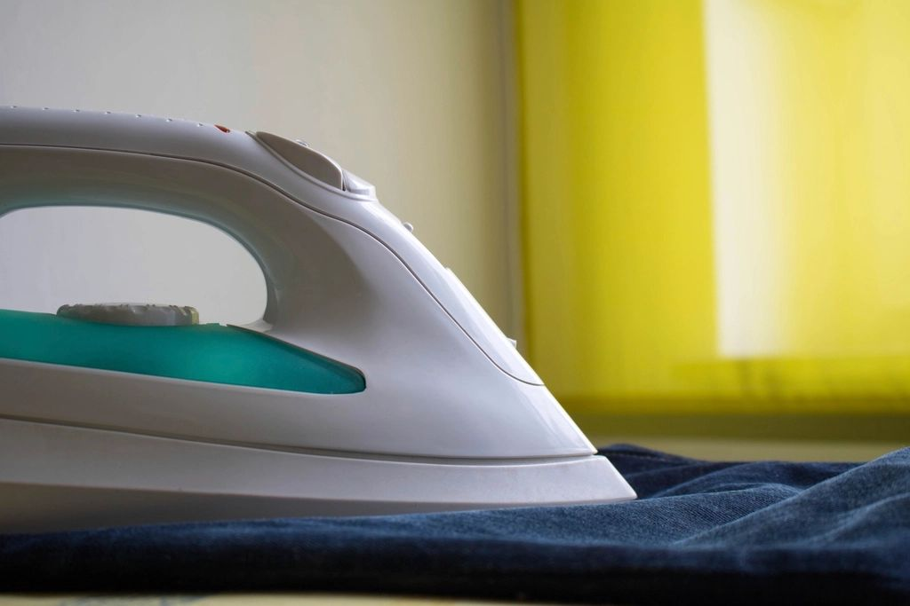

Hizmetler
Kuru temizleme, yıkama, ütü ve perde. Her parçanın rayı ayrı, bakımı etiketine göre. Fiyat ve hazır olacağı gün parçaya göre değiştiği için WhatsApp'tan ya da telefonla sormanız en doğrusu.
-
Kuru temizleme
Suyla yıkanınca çekebilen, biçimini kaybedebilen ya da renk verebilen giysiler su yerine özel çözücülerle temizlenir. Etiketinde daire içinde P ya da F gördüğünüz parçalar bu raya.
Etikette sık görülenler
P: kuru temizlemeF: hidrokarbonla kuru temizlemeGetirirken: Lekeyi ve ne zaman olduğunu söyleyin; evde leke çıkarıcı denediyseniz bunu da belirtin.
Talebe ekle -
Takım elbise ve ceket
Ceket, pantolon ve yelek; astarlı, telalı, omuz yastıklı parçalar. Yün takımların büyük kısmı kuru temizleme etiketi taşır.
Etikette sık görülenler
P: kuru temizlemeOrta ısıda ütüGetirirken: Takımın parçalarını birlikte getirin; ayrı temizlenen parçalar zamanla farklı ton alabilir.
Talebe ekle -
Mont, kaban ve palto
Şişme mont, yün kaban, palto ve trençkot. Dolgunun, astarın ve kumaşın türüne göre yıkama ya da kuru temizleme seçilir.
Etikette sık görülenler
30 °C, çok hassas programF: hidrokarbonla kuru temizlemeGetirirken: Çıkarılabilen kürk yaka, kapüşon ya da kemer varsa ayırın veya bırakırken belirtin.
Talebe ekle -
Abiye ve gelinlik
Taşlı, boncuklu, payetli, tüllü ya da ipek parçalar özen ister. İşlemenin yapıştırma mı dikiş mi olduğu işlemi değiştirebilir.
Etikette sık görülenler
P: hassas kuru temizlemeYıkanmazGetirirken: Dökülen taş, sökük ya da etek ucunda kir varsa önceden söyleyin; isterseniz WhatsApp'tan fotoğraf gönderin.
Talebe ekle -
Gömlek ve günlük giyim
Gömlek, bluz, elbise, etek ve kazak gibi günlük parçalar etiketine uygun programda yıkanır, ardından ütülenir.
Etikette sık görülenler
40 °C'ye kadar yıkamaYüksek ısıda ütüGetirirken: Yaka ve koltuk altı sararmasını, manşet kirini bırakırken gösterin.
Talebe ekle -
Yalnız ütü
Temiz ama kırışık parçalar için. Etiketteki ütü sembolünün nokta sayısı ısı sınırını gösterir: bir nokta düşük, üç nokta yüksek ısı.
Etikette sık görülenler
Düşük ısıda ütüOrta ısıda ütüGetirirken: Pantolonda çizgi (pli) isteyip istemediğinizi söyleyin.
Talebe ekle -
Perde: tül ve fon
Tül, fon ve güneşlik perdeler. Kumaşa, astara ve boya durumuna göre yıkama ya da kuru temizleme seçilir.
Etikette sık görülenler
30 °C'ye kadar yıkamaP: kuru temizlemeGetirirken: Panel sayısını ve hangi pencereye ait olduklarını not edin; kanca ve halkalar için önceden sorun.
Talebe ekle -
Battaniye ve ev tekstili
Battaniye, örtü, nevresim gibi büyük parçalar için önce sorun: kumaşa, dolguya ve boyuta göre bilgi verelim.
Etikette sık görülenler
40 °C, hassas programTamburda kurutulmazGetirirken: Etiketin fotoğrafını çekip WhatsApp'tan göndermeniz en hızlı yoldur.
Talebe ekle
Kuru temizleme nedir?
Kuru temizleme, giysinin su yerine özel çözücülerle (solvent) temizlenmesidir. Adı "kuru" olsa da işlem bir sıvının içinde yapılır; farkı, suyun kumaşı şişirip çekmesine, biçimini bozmasına ya da rengini akıtmasına yol açmamasıdır.
Bu yüzden yün takımlar, astarlı ceketler, ipek ve bazı viskon ürünler için sık tercih edilir. Etiketteki daire içindeki P ya da F harfi hangi çözücülerin uygun olduğunu, W ise profesyonel ıslak temizliği anlatır. Daire üstü çarpılıysa parça kuru temizlemeye verilmez.
Etiket rehberinde bu sembollerin hepsine dokunup anlamını görebilirsiniz.
| Parça | Genellikle | Dikkat |
|---|---|---|
| Yün takım elbise, ceket | Çoğunlukla kuru temizleme | Astar ve tela biçimini korur. |
| Pamuklu gömlek | Çoğunlukla yıkama ve ütü | Yaka ve manşet lekeleri önceden söylenmeli. |
| Yün kaban, palto | Çoğunlukla kuru temizleme | Kürk ya da deri detay varsa belirtin. |
| Şişme mont | Etikete göre yıkama ya da kuru temizleme | Dolgunun türü ve tam kuruması önemlidir. |
| Abiye, gelinlik | Çoğunlukla hassas kuru temizleme | Taş, boncuk ve payet önceden kontrol edilir. |
| İpek bluz, eşarp | Etikete göre kuru temizleme ya da çok hassas yıkama | Su lekesi ve renk akmasına yatkındır. |
| Tül perde | Çoğunlukla yıkama | Kumaşa göre ütü ya da asarak düzeltme. |
| Fon perde | Kumaşa ve astara göre değişir | Etiket fotoğrafı karar vermeyi kolaylaştırır. |
Bu tablo genel eğilimi gösterir; karar her zaman giysinin kendi etiketine ve kumaşına göre verilir.

Ütü noktaları ve buhar
Ütü sembolündeki noktalar taban sıcaklığının üst sınırıdır. Kumaş bu sınırın üstünde ısıtılırsa parlama, erime ya da kalıcı iz oluşabilir.
- Bir nokta, en fazla 110 °C. Akrilik, poliamid, asetat gibi kumaşlar. Buhar kalıcı hasar verebilir.
- İki nokta, en fazla 150 °C. Ütü kadranında genellikle yün, ipek ve polyester ayarı.
- Üç nokta, en fazla 200 °C. Pamuk ve keten.
- Çarpılı ütü. Ütü yapılmaz; kırışıklık için ne yapılabileceğini sorun.
Koyu kumaşlarda ütü parlaması daha çok görünür; evde ütülerken parçayı ters çevirmek ya da araya ince bir bez koymak bu riski azaltır.
Leke ilk yardımı: getirene kadar
Lekenin çıkıp çıkmayacağı türüne, ne kadar eski olduğuna ve kumaşa bağlıdır; her leke çıkmayabilir. İlk dakikalarda yapılanlar ise çoğu zaman farkı belirler.
Yapın
- Fazlasını kaşıkla ya da kâğıt havluyla alın; lekeyi bastırarak, dışından içine doğru kurulayın.
- Lekenin ne olduğunu ve ne zaman olduğunu not edin.
- Parçayı mümkün olduğunca erken getirin; yerleşmiş leke daha zor çıkar.
- Evde bir şey denediyseniz neyi denediğinizi söyleyin.
Yapmayın
- Ovalamayın: leke yayılır, kumaşın yüzeyi tüylenir.
- Sıcak su, saç kurutma makinesi ya da ütü tutmayın: ısı birçok lekeyi kalıcı hale getirebilir.
- Kan, süt, yumurta gibi lekelerde sıcak sudan özellikle kaçının.
- Çamaşır suyu, aseton, kolonya gibi maddeleri denemeyin: renk açabilir, kumaşa zarar verebilir.
Perdeyi indirmeden önce
Perde büyük ve çok parçalı olduğu için biraz hazırlık işi kolaylaştırır. Bu listeyi telefonunuzda açıp pencere pencere işaretleyebilirsiniz.
Hangi parça, hangi işlem?
Emin değilseniz etiketin fotoğrafını WhatsApp'tan gönderin ya da talep sayfasında parçalarınızı seçip mesajınızı hazırlayın.